Sobre Mí
Disponible para trabajar 🖥️Apasionado por la tecnología y la informática, con sólida formación en sistemas microinformáticos y redes.
Soy un perfil proactivo y resolutivo, enfocado en proteger infraestructuras digitales y optimizar sistemas en red. Mi objetivo es la excelencia técnica en cada despliegue.
Trayectoria
Experiencia
Técnico en prácticas
DPUNTO (Madrid)
Soporte TPV, resolución de incidencias hardware/software y optimización de soporte técnico.
Formación
Máster Ciberseguridad & ASIR
Actualmente cursando el Máster en Ciberseguridad, un programa diseñado para construir una especialización robusta sobre mi base de Sistemas (ASIR).
Prometeo by ThePower
Grado Superior Técnico en Administración de Sistemas Informáticos en Red
Cursando el Grado Superior en Administración de Sistemas Informáticos en Red (ASIR), adquiriendo experiencia práctica en administración de sistemas Windows/Linux, networking y virtualización.
Prometeo by ThePower
Grado Medio Sistemas Microinformáticos y Redes Locales
I.E.S. Villablanca
Graduado en Educación Secundaria Obligatoria
I.E.S. José Saramago
Habilidades & Tecnologías
Cisco Networking
Diseño, implementación y gestión de infraestructuras de red robustas.
Linux
Administración avanzada, gestión de servidores y optimización de recursos.
Windows
Administración avanzada y configuración de entornos Windows y Windows Server.
Python
Automatización de tareas, análisis de seguridad y desarrollo de scripts.
HTML5 / CSS3
Creación de interfaces web modernas, accesibles y responsivas.
JavaScript
Desarrollo de lógica interactiva orientada al frontend.
Git / GitHub
Control de versiones, despliegue continuo y trabajo colaborativo.
Markdown
Escritura estructurada y ágil para documentación técnica y READMEs.
VirtualBox
Creación y gestión de entornos aislados para despliegue y auditorías.
Proyectos IT
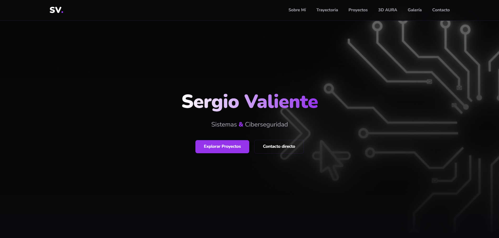
Este Portfolio
Diseño y desarrollo web de mi portfolio personal. Creado desde cero utilizando HTML5, CSS3 y JavaScript con un diseño responsive y estética minimalista.
GitHub Repo ↗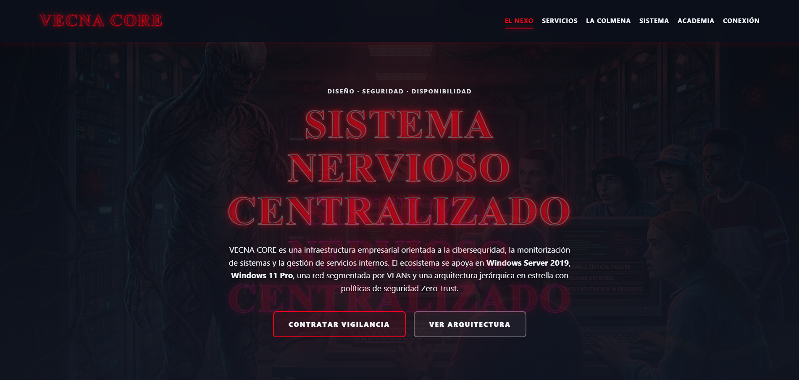
Vecnacore
Proyecto intermodular en equipo desarrollado durante el primer año del grado superior ASIR. Enfocado en la implementación, gestión y administración de infraestructuras IT y servicios de red.
GitHub Repo ↗Universo 3D
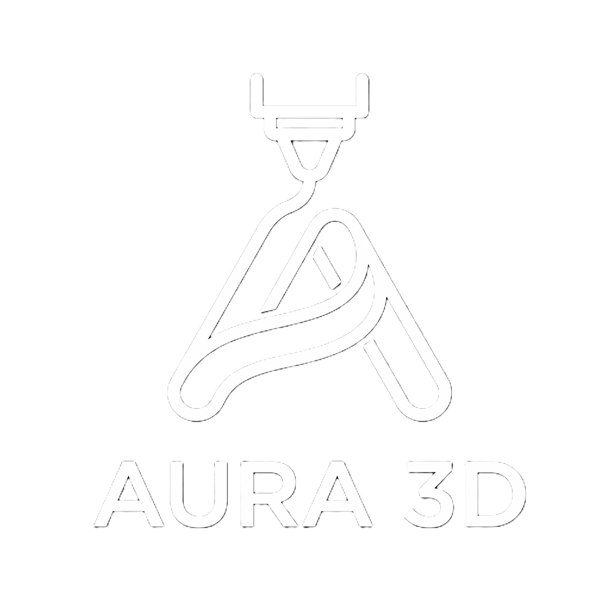
3D AURA
Nuestra marca y empresa de impresión 3D. Apasionados por materializar ideas y llevar la creatividad al mundo físico.
Especializados en pedidos personalizados, diseño a medida y fabricación de alta calidad. Desde piezas técnicas hasta decoración única.
Documentamos todo nuestro proceso en redes sociales:
Nuestro Setup de Impresión
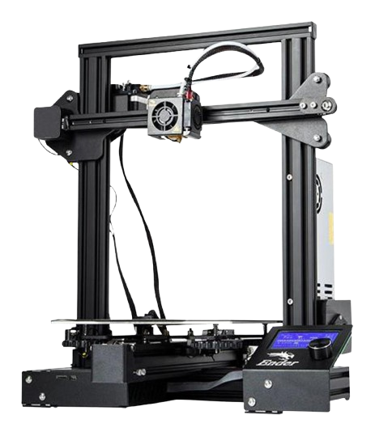
Ender 3 Pro
Fiabilidad absoluta. Ideal para prototipado resistente, piezas técnicas y proyectos de gran durabilidad.
PLA 1.75mm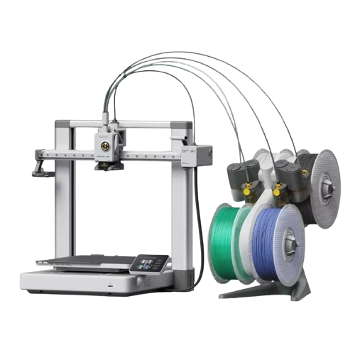
Bambu Lab A1 Combo
Tecnología de vanguardia. Impresión multicolor a alta velocidad con precisión milimétrica en cada capa.
Multicolor AMSNuestras Creaciones
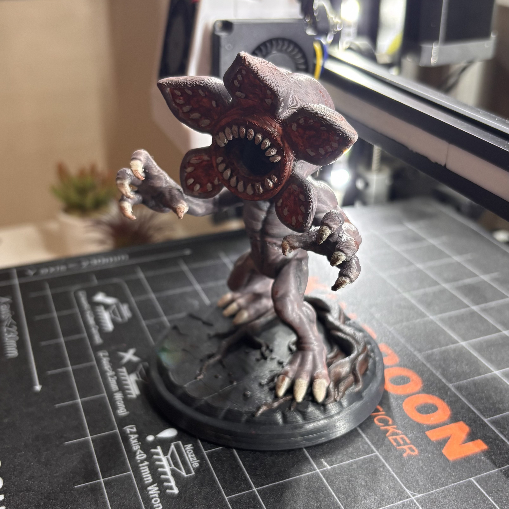
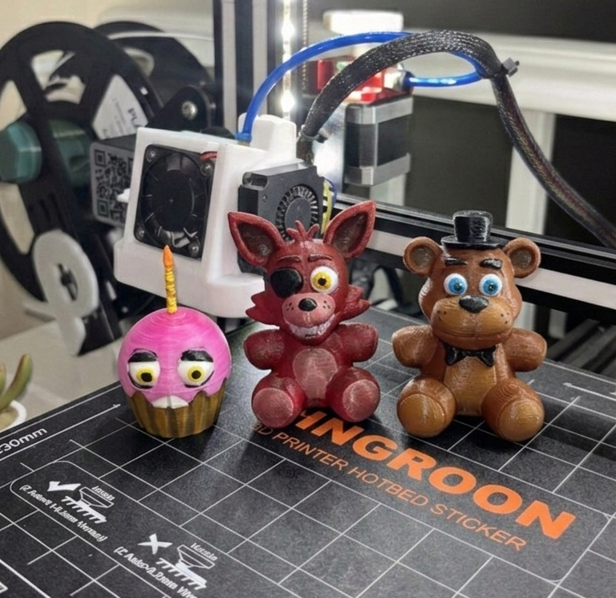
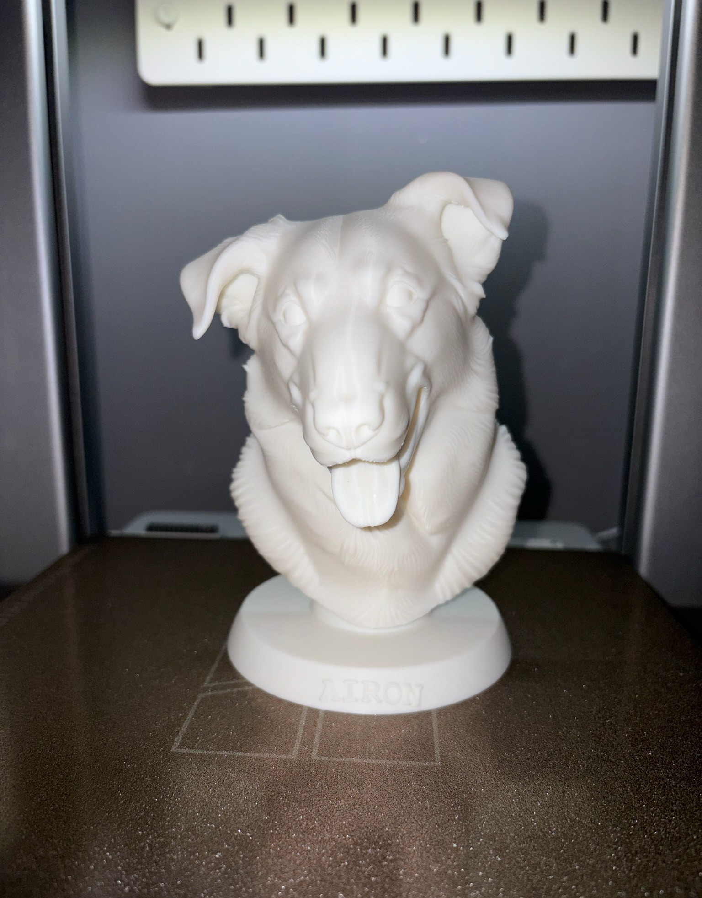
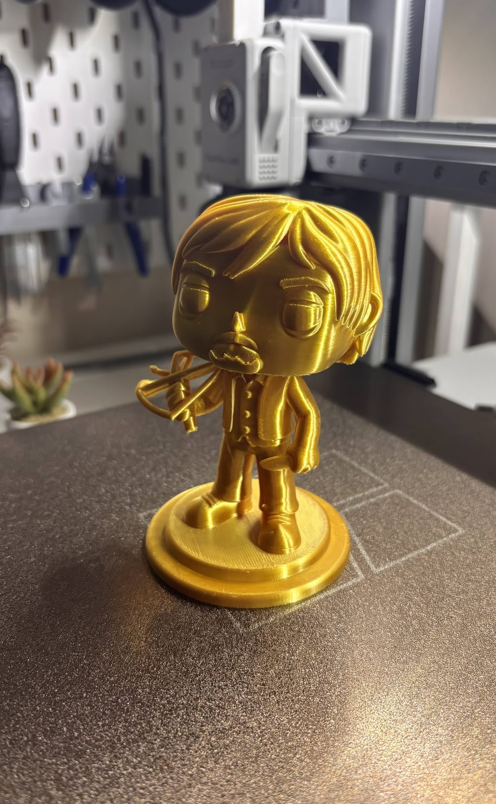
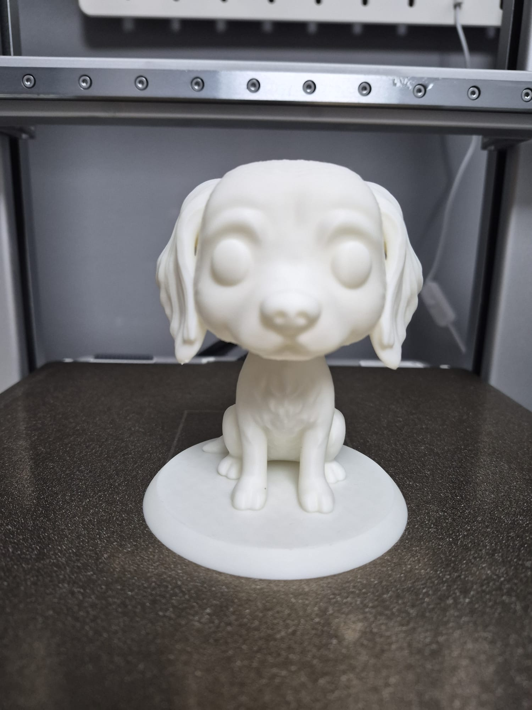
Galería
Aficionado a la fotografía y amante de los pequeños detalles.
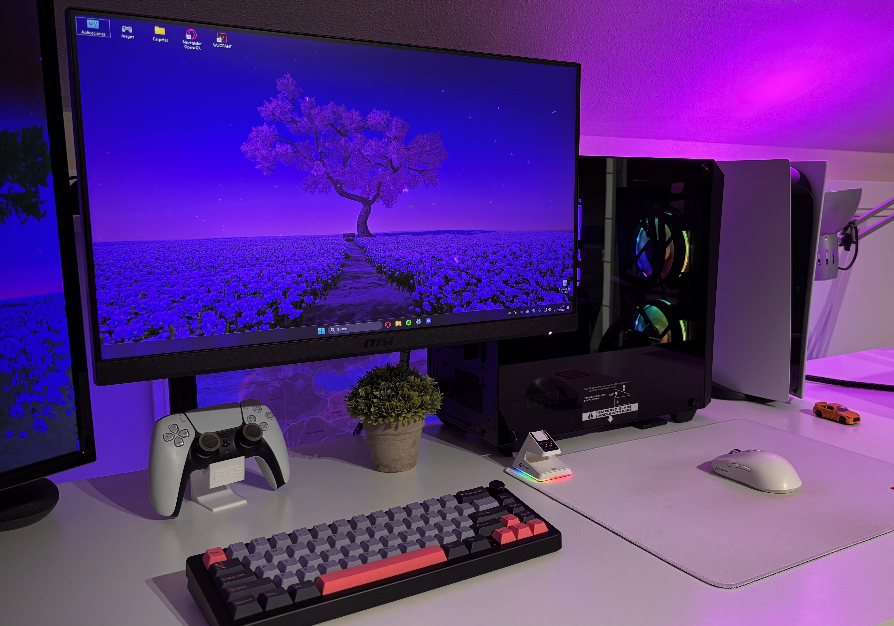
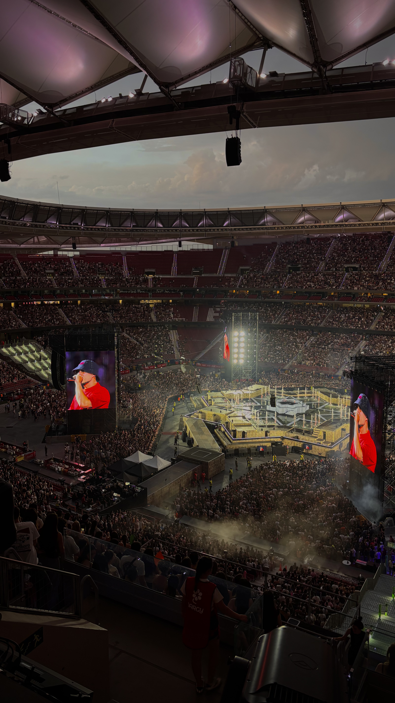
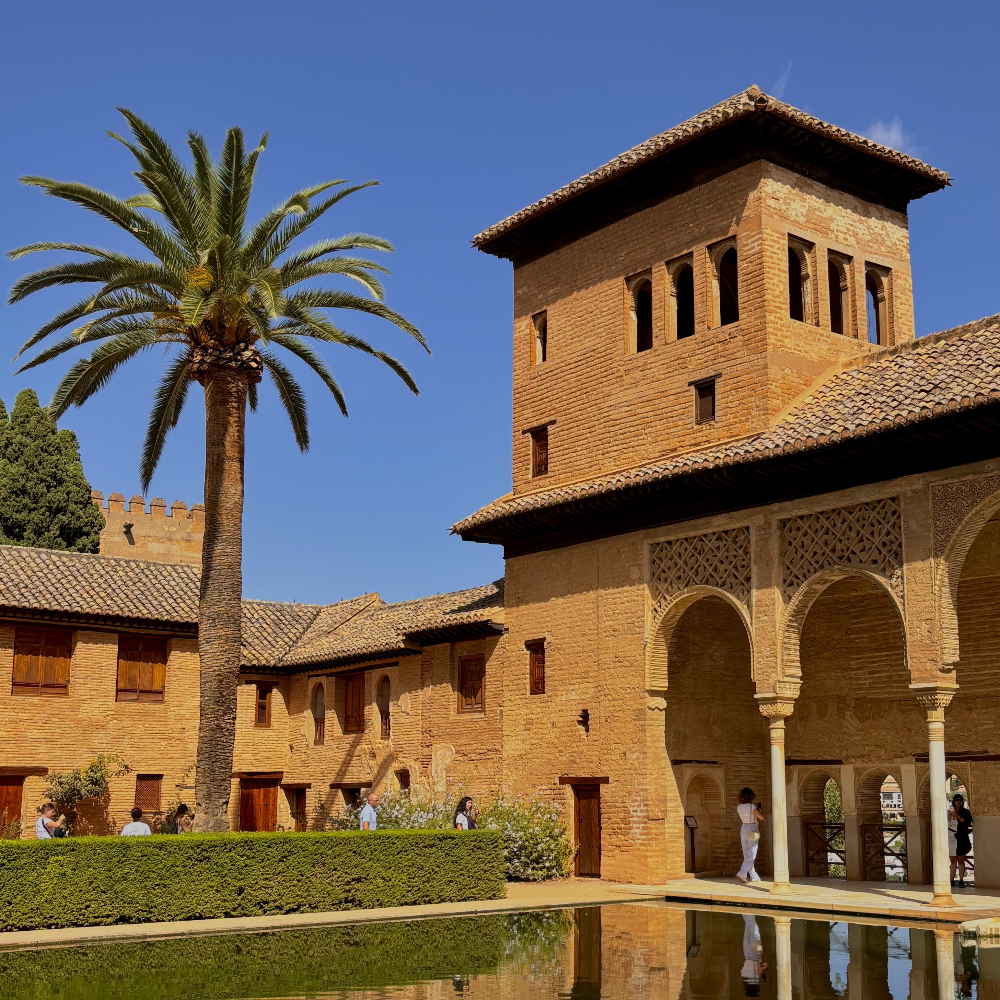
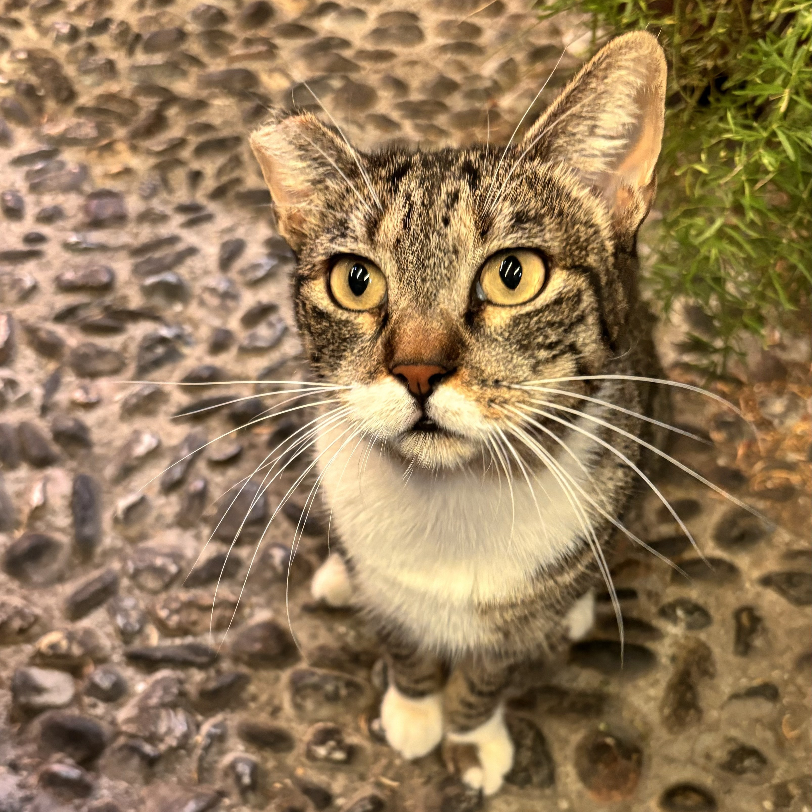